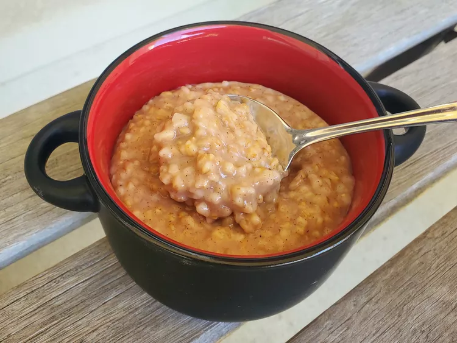

Instant Steel Cut Oats Recipe

Steel cut oats are incredibly easy to make in the Instant Pot. Using the sauté function to toast the oats in olive oil before adding liquid for pressure cooking adds a nice toasty flavor. This recipe is for traditional steel cut oats, not quick cooking-cook ones. Once cooked and cooled, put oats in an airtight container and refrigerate. In the morning, take about a half cup and add 1/4 cup water or milk, then steam for 15 minutes with your Instant Pot's steam function. Stir well and enjoy oats every morning during the week!
Prep & Cooking Time
5 minutes prep and 30 minutes cook time
Ingredients
- 2 tablespoons of virgin olive oil
- 2 cups of steel cut oats
- 1/8 teaspoon ground nutmeg
- 1/4 teaspoon of cinnamon
- 6 cups of water
- 1 teaspoon of vanilla extract
Directions
- Set a multi-functional pressure cooker (such as Instant Pot®) to the sauté function and press start. Heat olive oil in the cooker for 1 minute. Add oats, and cook and stir until toasted, about 3 minutes.
- Add nutmeg and cinnamon, stir well, then stir in water and vanilla extract. Turn off the sauté function.
- Close and lock the lid. Select high pressure according to manufacturer’s instructions; set timer for 15 minutes. Allow 10 to 15 minutes for pressure to build.
- Release pressure using the natural-release method according to manufacturer’s instructions, 10 to 40 minutes.
- Unlock and remove the lid, then stir the oatmeal vigorously, making sure to incorporate the oats at the bottom of the pot where they will be thicker. Scoop out about 1/2 cup of oatmeal and enjoy!